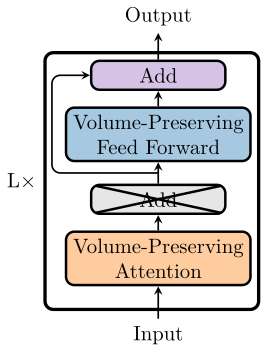
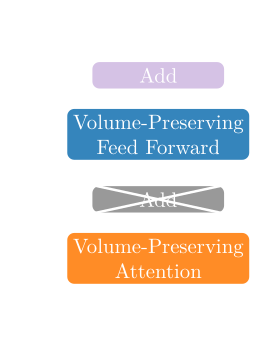

Volume-Preserving Transformer
The volume-preserving transformer [4] is, similar to the standard transformer, a combination of two different neural networks: a volume-preserving attention layer and a volume-preserving feedforward layer. It is visualized below:
 
In the figure we indicate that we leave out the add connection. When talking about the standard transformer we said that the add connection is optional and can be included via the keyword argument add_connection. For the volume-preserving transformer this is not true: it is always excluded.
Note that the volume-preserving transformer preserves the volume in the sense of the product spaces. That the VolumePreservingAttention layer preserves this structure was discussed when we introduced it. That the VolumePreservingFeedForwardLayers preserve this structure on the product space is also easy to see. We take a VolumePreservingFeedForwardLayer, e.g.
\[ \psi: z \mapsto \sigma(Lz + b),\]
and look at its action on the element of the product space $[z^{(1)}, \ldots, z^{(T)}] = Z\in\mathbb{R}^{d\times{}T}$:
\[ \psi_T: [z^{(1)}, \ldots, z^{(T)}] \mapsto [\psi(z^{(1)}), \ldots, \psi(z^{(T)})].\]
The jacobian of $\hat{\psi}_T:\mathbb{R}^{dT}\to\mathbb{R}^{dT}$, the representation of $\psi_T$ in the coordinate system of the big vector, is of the form[1]
\[ \nabla\hat{\psi}_T = \begin{bmatrix} J & \mathbb{O} & \cdots & \mathbb{O} \\ \mathbb{O} & J & \cdots & \mathbb{O} \\ \vdots & \ddots & \vdots & \vdots \\ \mathbb{O} & \mathbb{O} & \cdots & J\end{bmatrix} = J \otimes \mathbb{I}_T,\]
where $J$ is the jacobian of $\psi$. We now see that $\mathrm{det}(\nabla\hat{\psi}_T) = 1$ and volume in the product space is preserved.
Library Functions
GeometricMachineLearning.VolumePreservingTransformer — TypeVolumePreservingTransformer(sys_dim, seq_length)Make an instance of the volume-preserving transformer for a given system dimension and sequence length.
Arguments
The following are keyword argumetns:
n_blocks::Int = 1: The number of blocks in one transformer unit (containing linear layers and nonlinear layers).n_linear::Int = 1: The number of linearVolumePreservingLowerLayers andVolumePreservingUpperLayers in one block.L::Int = 1: The number of transformer units.activation = tanh: The activation function.init_upper::Bool = false: Specifies if the network first acts on the $q$ component.skew_sym::Bool = false: specifies if we the weight matrix is skew symmetric or arbitrary.
References
- [4]
- B. Brantner, G. de Romemont, M. Kraus and Z. Li. Volume-Preserving Transformers for Learning Time Series Data with Structure, arXiv preprint arXiv:2312:11166v2 (2024).
- 1In order to arrive at this representation we possibly have to exchange the order of the rows in the matrix. This is however not critical since it may only cause a sign change in the determinant.